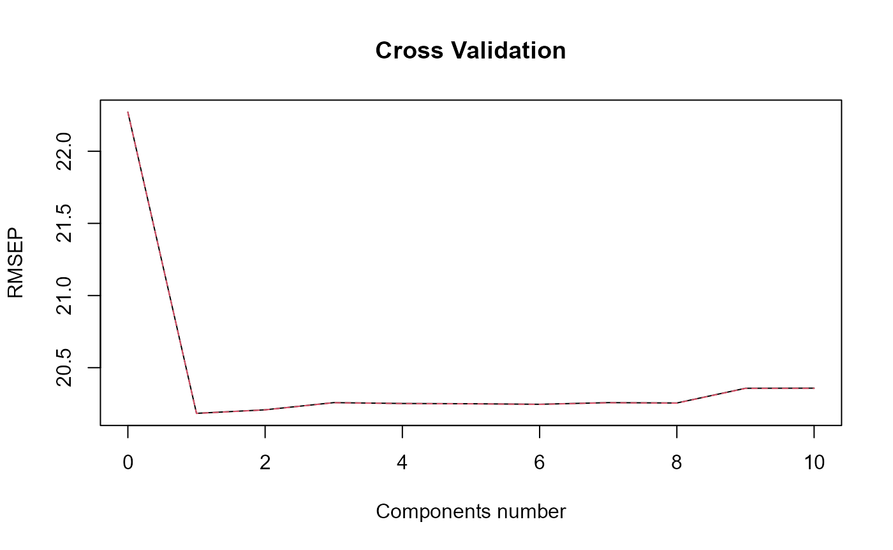
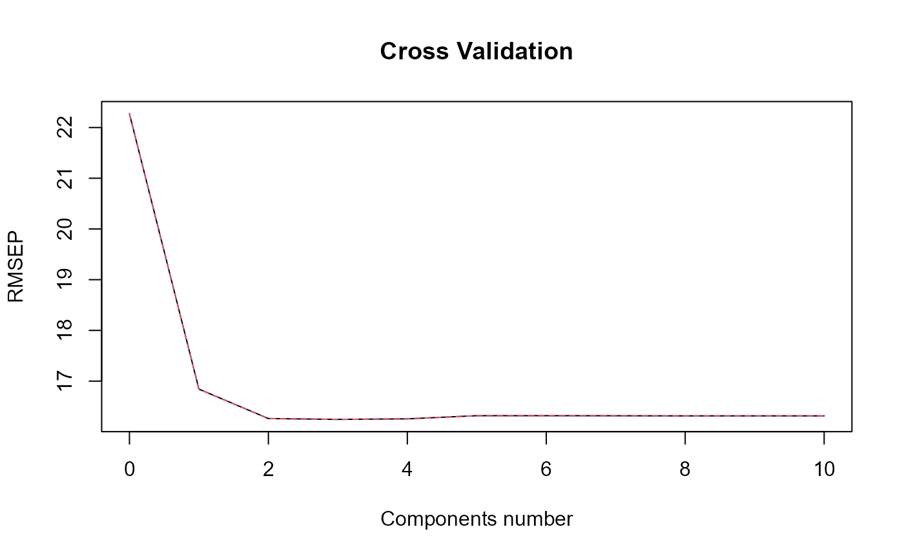
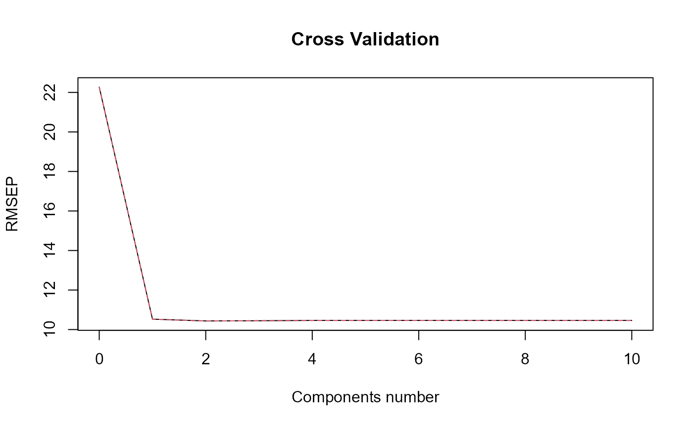
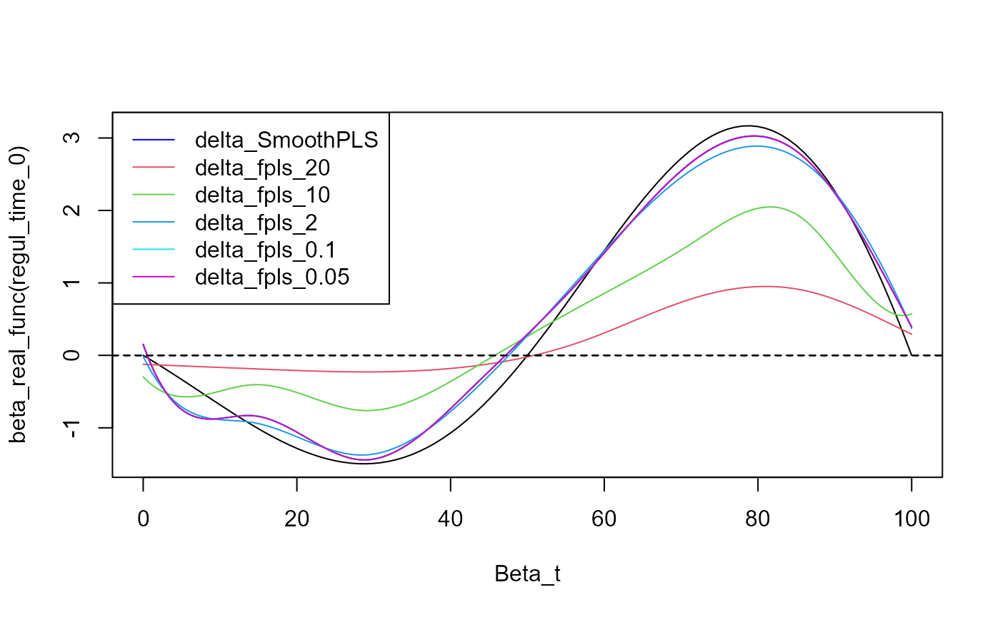

This notebook show the limit convergence of the FPLS method to the Smooth PLS method by increasing the increments on the regularization time vector.
Parameters
nind = 100 # number of individuals (train set)
start = 0 # First time
end = 100 # end time
lambda_0 = 0.2 # Exponential law parameter for state 0
lambda_1 = 0.1 # Exponential law parameter for state 1
prob_start = 0.5 # Probability of starting with state 1
curve_type = 'cat'
TTRatio = 0.2 # Train Test Ratio means we have floor(nind*TTRatio/(1-TTRatio))
# individuals in the test set
NotS_ratio = 0.2 # noise variance over total variance for Y
beta_0_real=5.4321 # Intercept value for the link between X(t) and Y
nbasis = 7 # number of basis functions
norder = 4 # 4 for cubic splines basis
regul_time_0 = seq(start, end, 1)
beta_real_func = beta_1_real_func # link between X(t) and Y
int_mode = 1 # in case of integration errors.
plot(regul_time_0, beta_real_func(regul_time_0))Data creation
df & df_test
Here we create some data to work with :
df = generate_X_df(nind = nind, start = start, end = end,
curve_type = curve_type,
lambda_0 = lambda_0, lambda_1 = lambda_1,
prob_start = prob_start)
head(df)
#> id time state
#> 1 1 0.000000 0
#> 2 1 2.883051 1
#> 3 1 16.173600 0
#> 4 1 16.331487 1
#> 5 1 16.893597 0
#> 6 1 18.476103 1
nind_test = number_of_test_id(TTRatio = TTRatio, nind = nind)
df_test = generate_X_df(nind = nind_test, start = start, end = end,
curve_type = curve_type,
lambda_0 = lambda_0, lambda_1 = lambda_1,
prob_start = prob_start)
print(paste0("We have ", length(unique(df_test$id)), " id on test set."))
#> [1] "We have 25 id on test set."Y_df & Y_df_test
Y_df = generate_Y_df(df, curve_type = curve_type,
beta_real_func = beta_real_func,
beta_0_real, NotS_ratio, id_col = 'id', time_col = 'time')
#> Warning: package 'future' was built under R version 4.4.3
Y_df_test = generate_Y_df(df_test, curve_type = curve_type,
beta_real_func = beta_real_func,
beta_0_real, NotS_ratio,
id_col = 'id', time_col = 'time')
Y = Y_df$Y_noised
names(Y_df)
#> [1] "id" "Y_real" "Y_noised"
Basis creation
basis = create_bspline_basis(start, end, nbasis, norder)
# ORTHOGONAL
#basis = fda::create.fourier.basis(rangeval=c(start, end), nbasis=(nbasis))
plot(basis, main=paste0(nbasis, " Function basis")) # note cubic or Fourier
Smooth PLS
spls_obj = smoothPLS(df_list = df, Y = Y, basis_obj = basis,
orth_obj = TRUE,
curve_type_obj = curve_type,
regul_time_obj = regul_time_0,
int_mode = int_mode,
print_steps = TRUE, plot_rmsep = TRUE,
print_nbComp = TRUE, plot_reg_curves = TRUE )
#> ### Smooth PLS ###
#> ## Use parallelization in case of heavy computational load. ##
#> ## Threshold can be manualy adjusted : (default 2500) ##
#> ## >options(SmoothPLS.parallel_threshold = 500) ##
#> => Input format assertions.
#> => Input format assertions OK.
#> => Orthonormalize basis.
#> => Data objects formatting.
#> => Evaluate Lambda matrix.
#> ==> Lambda for : CatFD_1_state_1.
#> => PLSR model.
#> => Optimal number of PLS components : 2#> => Evaluate SmoothPLS functions and <w_i, p_j> coef.
#> => Build regression functions and intercept.
#> ==> Build regression curve for : CatFD_1_state_1delta
Delta Smooth_PLS
delta_0 = spls_obj$reg_obj$Intercept
delta_0
#> [1] -1.171871
delta = spls_obj$reg_obj$CatFD_1_state_1
plot(delta)#> [1] "done"FPLS
We do different FPLS with different regul_time intervals.
fpls_list = list()
for(i in 1:length(pas)){
fpls_obj = funcPLS(df_list = df,Y = Y, basis_obj = basis,
regul_time_obj = regul_time[[i]],
curve_type_obj = 'cat',
plot_rmsep = TRUE, print_steps = FALSE,
print_nbComp = TRUE, plot_reg_curves = TRUE)
fpls_list = append(fpls_list, list(fpls_obj))
}
#> ### Functional PLS ###
#> Optimal number of PLS components : 2 .#> ### Functional PLS ###
#> Optimal number of PLS components : 1 .#> ### Functional PLS ###
#> Optimal number of PLS components : 2 .#> ### Functional PLS ####> Optimal number of PLS components : 2 .#> ### Functional PLS ####> Optimal number of PLS components : 2 .Curve comparison
y_lim = eval_max_min_y(f_list = list(beta_real_func, delta),
regul_time = regul_time_0)
plot(regul_time_0, beta_real_func(regul_time_0), type='l', xlab="Beta_t",
ylim = y_lim)
plot(delta, add=TRUE, col='blue')
#> [1] "done"
for(i in 1: length(fpls_list)){
plot(fpls_list[[i]]$reg_obj$CatFD_1_state_1, add=TRUE, col=(i+1))
}
legend("topleft",
legend = c("delta_SmoothPLS", paste0("delta_fpls_", as.character(pas))),
col = c("blue", c(1:length(pas)+1)),
lty = 1,
lwd = 1)
beta_list = list()
for(i in 1: length(fpls_list)){
beta_list = append(beta_list, list(fpls_list[[i]]$reg_obj$CatFD_1_state_1))
}
evaluate_curves_distances(real_f = beta_real_func,
regul_time = regul_time_0,
fun_fd_list = append(list(delta), beta_list))
#> [1] "real_f -> curve_1 / INPROD : -10.1835499195556 / DIST : 3.08621931671152"
#> [1] "real_f -> curve_2 / INPROD : 29.8002032162822 / DIST : 12.5967626116461"
#> [1] "real_f -> curve_3 / INPROD : 1.33245109773122 / DIST : 7.76976625407814"
#> [1] "real_f -> curve_4 / INPROD : -6.43012731439124 / DIST : 2.86568755807268"
#> [1] "real_f -> curve_5 / INPROD : -10.0483167349752 / DIST : 3.09342721862717"
#> [1] "real_f -> curve_6 / INPROD : -10.1041533196196 / DIST : 3.09651339339298"
print(pas)
#> [1] 20.00 10.00 2.00 0.10 0.05